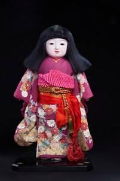

Ichimatsu Ningyō (Búp bê Ichimatsu (nữ)) là dòng búp bê truyền thống xuất hiện từ thời kỳ Edo (1603–1868). Tên gọi "Ichimatsu" được cho là bắt nguồn từ Sanogawa Ichimatsu, một diễn viên Kabuki nổi tiếng thế kỷ XVIII, người đã góp phần làm phổ biến phong cách búp bê này trên khắp Nhật Bản.
Khác với các dòng búp bê gắn với sân khấu hay lễ hội, Ichimatsu Ningyō tái hiện chân thực hình ảnh trẻ em Nhật Bản trong đời sống thường ngày. Các nghệ nhân đặc biệt chú trọng đến tỷ lệ cơ thể, đường nét khuôn mặt và biểu cảm để tạo nên cảm giác gần gũi như một em bé thật.
Tác phẩm này khắc họa hình ảnh một bé gái trong bộ furisode (kimono tay dài dành cho thiếu nữ) với họa tiết hoa truyền thống rực rỡ, kết hợp obi màu đỏ được thắt cầu kỳ. Mái tóc đen dài cùng gương mặt trắng thanh khiết là những đặc điểm đặc trưng của dòng Ichimatsu Ningyō, thể hiện vẻ đẹp trong sáng, dịu dàng và đoan trang của thiếu nữ Nhật Bản.
Trong văn hóa Nhật Bản, Ichimatsu Ningyō thường được cha mẹ hoặc ông bà tặng cho trẻ em vào những dịp đặc biệt như lễ Hinamatsuri (Lễ hội Bé gái), sinh nhật hoặc các sự kiện quan trọng, với mong muốn các em luôn khỏe mạnh, bình an và hạnh phúc. Người Nhật cũng tin rằng búp bê là biểu tượng của tình yêu gia đình và có thể gửi gắm những lời cầu chúc tốt đẹp dành cho trẻ nhỏ.
市松人形（女）は、江戸時代（1603〜1868年）に登場した伝統人形です。「市松」という名は、18世紀の人気歌舞伎役者・佐野川市松に由来するという説が有力で（市松模様の衣装から、など諸説あります）、この人形のスタイルが日本中に広まるきっかけになったといわれています。
舞台や行事と結びついた人形とは異なり、市松人形は日常生活の中の日本の子どもの姿をありのままに再現しています。職人は体の比率、顔の線、表情に特にこだわり、本物の子どものような親しみやすさを生み出しています。
本作は、鮮やかな伝統的花文様の振袖（未婚の女性が着る袖の長い着物）をまとい、華やかに結んだ赤い帯を締めた女の子の姿を表しています。長い黒髪と白く清らかな顔は市松人形ならではの特徴で、日本の少女の清らかでやさしく、しとやかな美しさを表しています。
日本文化において市松人形は、ひな祭り（桃の節句）、誕生日、大切な行事などの特別な機会に、親や祖父母から子どもへ贈られることが多く、子どもがいつも健やかに、無事に、幸せに過ごせるよう願いが込められています。人形は家族の愛情の象徴であり、子どもへのよき願いを託すことができるものと信じられてきました。